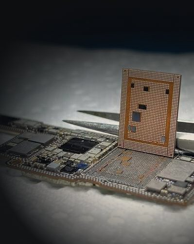

Trade & B2B · White-label board work
Your microsoldering bench, without the bench
Run a repair shop without board-level capability? Send us the jobs you'd otherwise turn away. We do the work white-label — your customer, your brand, our microscope.

Trade & B2B · White-label board work
Run a repair shop without board-level capability? Send us the jobs you'd otherwise turn away. We do the work white-label — your customer, your brand, our microscope.
Everything a shop needs to sell board-level repair and data recovery without owning a microscope, a reballing station, or the years at the bench.
Fixed trade rates on all board-level and data recovery work, so you can quote your customer with a margin built in.
We repair, you keep the customer. No branding on the device, no contact with your client — ever.
Batch your board-level jobs and post them from anywhere in Australia. Most jobs turned around within days.
Diagnostics and data recovery are no-fix-no-fee, so an unrepairable board never costs you or your customer.
Log every job in our portal, watch its status live, and get notified the moment it's tested and shipped back.
Schools, businesses, insurers and refurbishers: structured pricing and reporting for recurring volume.

No branding on the device, no contact with your client. We repair it, test it, wrap it and send it back to you, invoiced to your shop and covered by your 3-month warranty.
Four steps, every one of them logged in the portal. When your customer asks where their phone is, you can tell them.
Log a job in the portalBook it in the portal with the fault description, then post or drop off the device.
Microscope diagnosis, then a firm trade quote in the portal for your approval.
Board-level repair in-house, full function test, status updated live as it moves.
Shipped back or ready for pickup, invoiced at trade rates with your 3-month warranty.
Send us your shop details and typical volume and we'll set up your trade account the same day. Email info@sydneymobilephonerepairs.com.au or call (02) 8957 1077.